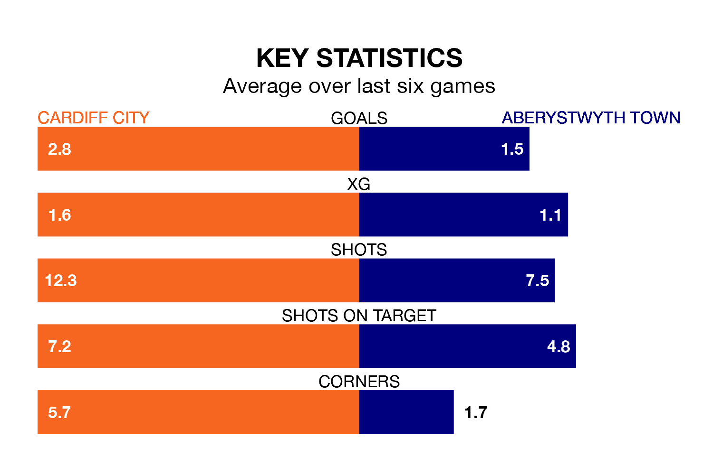

Cardiff City host Aberystwyth Town in Sunday's early match looking to bounce back from defeat last time out in the Welsh Premier Women's League.
Cardiff, who sit top of the league after 14 games, fell to a 2-0 home defeat to Swansea City on February 11.
They face an Aberystwyth side who secured a draw in their last match, a 3-3 tie with The New Saints Women, and who sit fourth in the table.
With 41 goals in 14 games so far this season, Cardiff are the league's highest scorers with 2.9 goals per game. And they are conceding fewer than average, letting in eight goals at a rate of 0.6 per game.
Aberystwyth, meanwhile, are below average scorers, with 1.5 goals per game, compared to a league average of 1.8. They have conceded 1.6 goals per game.
In the last 10 years, Cardiff and Aberystwyth have played each other on 10 occasions. Cardiff won nine of them and they drew once.
On average, Cardiff scored 2.5 goals and Aberystwyth 0.2 in those matches.
Their last meeting was on December 17, when Cardiff won 5-0 away.
City are in reasonable form in the Welsh Premier Women's League, with four wins and two losses from their last six games.
With a win and three draws over that period, Town's form is much worse – they have taken six points from 18, compared to the hosts' 12.
Updated: 09:34 (UTC), 08/03/24